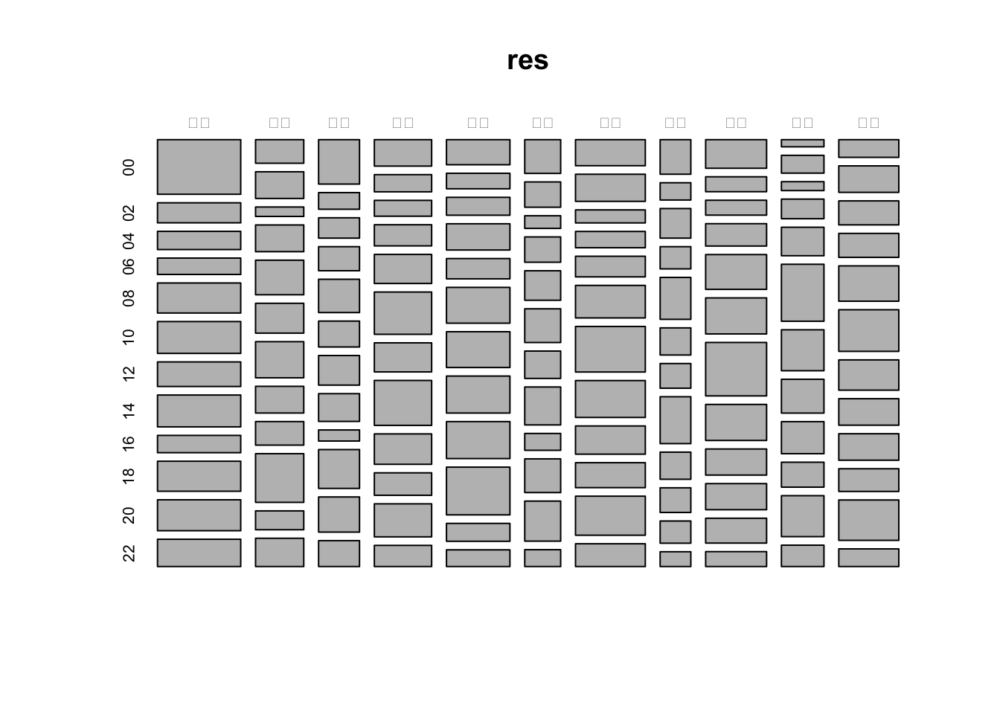
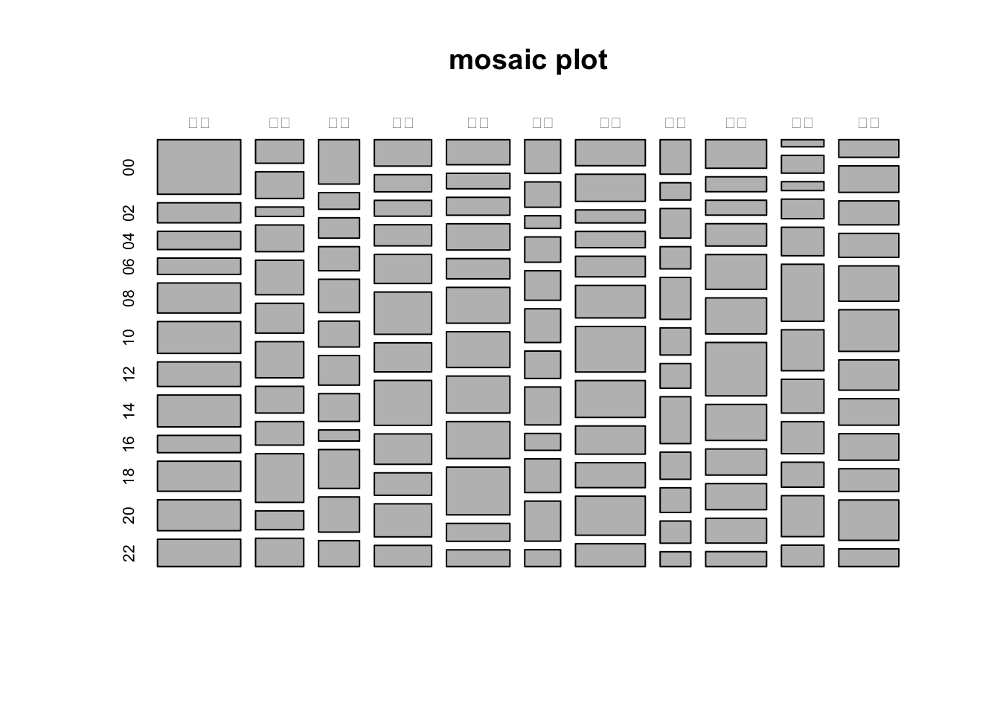
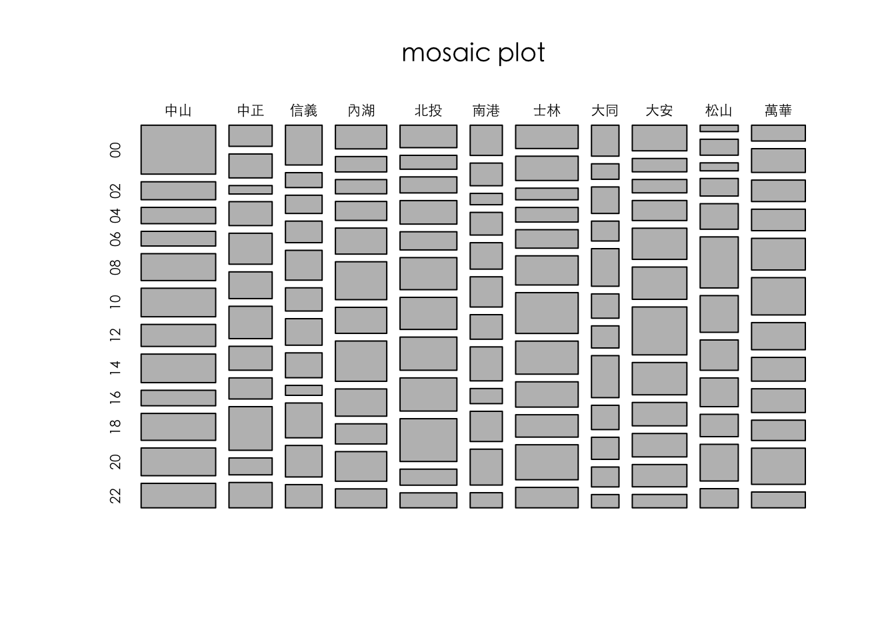
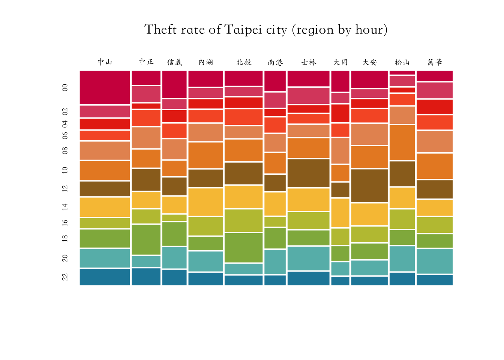

Chapter 7 讀取CSV：以台北市竊盜案分佈為例
- copy from google docs
- copy google docs to paper to retrieve figs
- save figs to folder
- link to figs
- check concsistency between rmd and google docs
除了延續前節篩取資料列和選取變項欄外，本節的重點在於利用count()或tapply()等函式進行計數。一般來說，觀察得到的資料是觀察紀錄（例如在路口蹲點計算車流或者經過的行人類型）。但能夠被計算或比較的是觀察紀錄後的計量，也就是具目的性地抽取數個變項，然後看看各個變項組合有多少筆適才的觀察紀錄。最後，為了一般讀者閱讀，會經常把其中兩個變項抽出來，然後把一個變項當成欄，一個變項當成列，然後交叉呈現兩個變項下的資料計數。
7.1 分析步驟
7.1.1 步驟一：摘要與提要
讀取CSV檔
## Warning: package 'tidyverse' was built under R version 3.5.2## ── Attaching packages ────────────────────────────────────────────────── tidyverse 1.3.0 ──## ✓ ggplot2 3.2.1 ✓ purrr 0.3.3
## ✓ tibble 2.1.3 ✓ stringr 1.4.0
## ✓ tidyr 1.0.2 ✓ forcats 0.4.0
## ✓ readr 1.3.1## Warning: package 'ggplot2' was built under R version 3.5.2## Warning: package 'tibble' was built under R version 3.5.2## Warning: package 'purrr' was built under R version 3.5.2## Warning: package 'stringr' was built under R version 3.5.2## Warning: package 'forcats' was built under R version 3.5.2## ── Conflicts ───────────────────────────────────────────────────── tidyverse_conflicts() ──
## x dplyr::filter() masks stats::filter()
## x purrr::flatten() masks jsonlite::flatten()
## x dplyr::lag() masks stats::lag()7.1.2 步驟二：載入台北市竊盜案資料
df <- read.csv(url, fileEncoding = "big5")這行的意思是把url用read.csv()這個函式讀取。讀取的同時，由於一般EXCEL的中文編碼為BIG5，所以該文件八成是該台北市政單位還用EXCEL在編資料，所以要跟程式碼講說，這個網址所指到的檔案編碼為BIG5。請自行嘗試看看如果沒有加入fileEncoding會有什麼錯誤訊息。
url <- "https://data.taipei/api/getDatasetInfo/downloadResource?id=68785231-d6c5-47a1-b001-77eec70bec02&rid=34a4a431-f04d-474a-8e72-8d3f586db3df"
df <- read.csv(url, fileEncoding = "big5")部分電腦可能為無法直接讀取，此時可以先自行把檔案下載下來後再讀取，唯獨記得要把該資料檔拖至本專案的資料夾內。例如以下面的例子來說，我把tptheft.csv拖至現在專案中的data資料夾，因此以下路徑正確而可以讀取。從不同的瀏覽器下載下來可能會產生不一樣的csv檔，如果無法開啟可以多嘗試不同的瀏覽器看看。
注意：可用View()概略瀏覽該data.frame的變項值與變項。
7.1.3 步驟三：產生新的變項
發生時段我打算取出前面的數字來代表時間就好，發生地點我打算只取出行政區名，其他地址不要。邏輯上，我要把那串字取出第x個字到第y個字，所以要用substr()這個函式，或者未來會教到的stringr::str_sub()函式。請用?substr查詢其用法和意義「getting sub string since x to y」。
另外我有發現前面幾年的資料特別少，所以我想要取出現在是幾年。我用str()觀察df後發現「發生日期」為一個整數，那代表我可以對其做加減乘除做運算。該變項的數值最多有7位，部分為6位，因為資料是從99年跨至100至104年。我若要取出這是幾年的資料，經觀察後我打算將該整數除以10000取商，剛好可以獲得年份的資料。除法取商的語法為`%/%``。
7.1.4 步驟四：整理、清理資料
該資料可發現，有幾年的資料在特別早之前，似乎直到104年才逐漸穩定，但不太確定。所以我首先要刪除那些資料太少的年份。所以我打算用table()這個函式看看究竟每個年份出現幾次。
##
## 00 02 04 06 08 10 12 14 16 18 20 22
## 295 191 151 184 270 327 339 315 236 275 272 198##
## 1~ 15 16 25 2段 31 40 61 七堵 三峽 三民 三芝 三重 中和 中壢 中山
## 1 2 1 1 1 2 1 1 2 3 1 1 35 18 8 366
## 中正 五股 信義 內埔 內湖 八德 北區 北屯 北投 南屯 南港 土城 士林 大同 大安 大溪
## 212 3 180 1 252 2 2 2 279 2 158 9 307 135 268 6
## 安樂 宜蘭 左營 平鎮 後龍 文山 新埔 新店 新莊 新豐 暖暖 東區 松山 板橋 林口 桃園
## 2 1 2 2 1 182 1 17 10 5 2 3 187 20 2 5
## 楊梅 樹林 橫山 水上 永和 汐止 泰山 淡水 深坑 湖口 湖西 田尾 萬華 竹山 竹東 芎林
## 5 4 1 1 11 12 2 18 2 1 1 1 264 1 1 1
## 芳苑 蘆洲 虎尾 街9 西區 觀音 過洋 頭份 頭屋 鹿港 龍潭 龜山
## 1 4 1 1 1 2 1 1 1 1 3 6##
## 104 105 106 107 108
## 777 742 591 531 412從上述彙整資料看來，資料把不是台北市的區域都給算進來了，所以要篩選台北市的區域，經過篩選後剩下2608筆資料。因為這些需要的資料都是文字型態的資料，且有數個，所以我們可以使用%in%這個運算符號，他指的是該變項的值是不是後面這個vector中的其中一個值。
df <- df[df$region %in% c("中山", "中正", "信義", "內湖",
"北投", "南港", "大同", "大安",
"士林", "松山", "萬華", "南港"), ]上述案例只能根據一個資料維度或根據一個變項來做計數彙整。然而，我們希望知道，不同的時間和不同的地點，是否竊盜比例會有所不同，此時我們需要同時考慮兩個變項。
7.1.5 步驟五：視覺化
mosaicplot()非常擅長視覺化兩個離散變項，並透過自動化百分比的設置，可以讓資料探索者得知，哪些變項的大小分佈跟其他不同。


但是，類似上述繪圖無法顯示中文要怎麼辦？未來R的繪圖尤其是Mac會經常遇到無法顯示中文的問題，Windows未來在用ggplot2套件進行繪圖時也會遇到相同的問題。因此，我們需要告訴電腦要用什麼字體。例如Mac上可以用以下兩種字體。

用自訂顏色來觀察會更清楚，一共有十二個區，就給予十二種顏色。
colors <- c('#D0104C', '#DB4D6D', '#E83015', '#F75C2F',
'#E79460', '#E98B2A', '#9B6E23', '#F7C242',
'#BEC23F', '#90B44B', '#66BAB7', '#1E88A8')
par(family=('STKaiti'))
mosaicplot(res, color=colors, border=0, off = 3,
main="Theft rate of Taipei city (region by hour)")
7.2 綜合：資料彙整（Data Summerazation）
在R中可以依照某個類別變數來計算次數、平均的函式有很多個。
7.2.1 方法一：tapply()
tapply()是原始base套件中的函式，其家族還有sapply()、lapply()、apply()等函式。但在快速的資料探索性分析中，反而會比較常用table()，而善於操作變項的統計書籍則常用aggreage()，後期開發的dplyr套件則有count()。在未來的練習中，最常用的是count()。
7.2.2 方法二：table()
以下為table()的用法，他也可以用於單一變項的計數，且他產生的結果並非一個data.frame而是一個資料型態稱為「table」，查詢看看?table以獲得更詳盡的說明。
## [1] "table"7.2.3 方法三：count()
以下為count()的用法。注意，將df根據time與region兩個類別變項計數後，會多一個n的變項，指出某個時間、某個區域有多少起竊盜案件。這樣的型態是統計學最常看見的型態，也就是variable-based的型態。但如果我們希望它變成一個「二維」的表格，亦即欄和列分別代表兩個不同的變項，那就需要用tidyr的函式spread()將你所要展開到欄的那個變項，和計數後的數字n作為參數，展開為一個二維的表格如下（你也可以選擇展開time）。
關於tidyr::spread()這樣的表示法，在::前為套件名稱，當程式尚未用library(tidyr)載入該套件，或者你只打算用spread()這麼一次，可以用這種表示法，指出這個spread()為tidyr這個套件中的函式。據此，R會自動載入該套件並執行該函式。
## # A tibble: 6 x 3
## time region n
## <chr> <chr> <int>
## 1 00 中山 60
## 2 00 中正 15
## 3 00 信義 24
## 4 00 內湖 20
## 5 00 北投 21
## 6 00 南港 16## # A tibble: 12 x 12
## time 中山 中正 信義 內湖 北投 南港 士林 大同 大安 松山 萬華
## <chr> <dbl> <dbl> <dbl> <dbl> <dbl> <dbl> <dbl> <dbl> <dbl> <dbl> <dbl>
## 1 00 60 15 24 20 21 16 24 14 23 4 14
## 2 02 22 17 9 13 13 12 25 7 12 10 21
## 3 04 20 6 11 12 15 6 12 12 12 5 19
## 4 06 18 17 13 16 22 12 15 9 18 11 19
## 5 08 33 22 18 22 17 14 19 17 28 16 28
## 6 10 35 19 14 32 30 16 30 11 29 32 33
## 7 12 27 23 16 22 30 13 42 10 43 23 24
## 8 14 35 17 15 34 31 18 34 19 29 19 21
## 9 16 19 15 6 23 31 8 26 11 21 18 21
## 10 18 33 31 21 17 40 16 23 10 21 14 18
## 11 20 34 12 19 25 15 19 36 9 20 23 32
## 12 22 30 18 14 16 14 8 21 6 12 12 147.2.4 練習
用tapply()、table()和count()與spread()後所跑出來的表格看似都是欄和列分別有兩個變項，請用class()測試看看，用不同的方法所產生的資料型態有何差異。